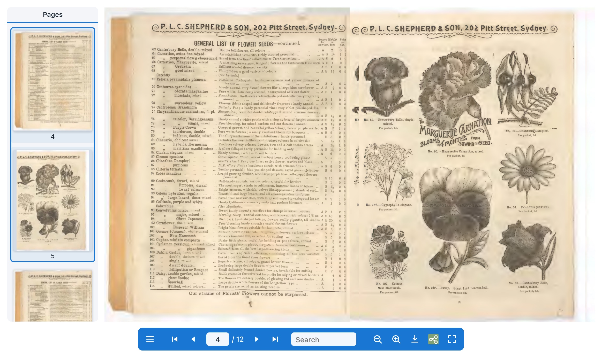
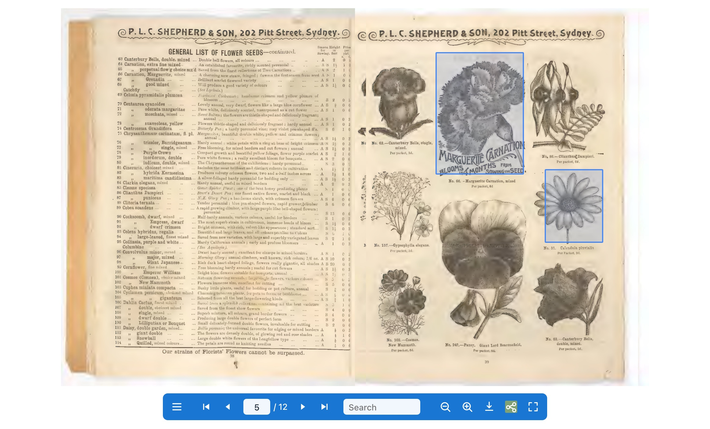

A flipbook that costs nothing and asks for nothing
A PDF, an EPUB, a comic archive, a folder of images or a folder of HTML pages, shown as a book with turning pages. On Joomla and on WordPress, from one codebase.
GPL-3.0-or-later · version — · no licence key, no account, no call to any server of ours

What it does
Everything below is in the free version, because there is only one version.
Real page turns
A page bends and falls as it turns, on a phone as well as a desktop, with an optional page-turn sound you can choose or replace.
Nothing is uploaded
The document is rendered in the visitor's browser. It never leaves your server, and no service of ours is contacted.
Search and contents
Search inside the document, jump from its own table of contents, or pick a page from the thumbnails.
Readable by search engines
The document's words go into the page as well, so a catalogue is not just a picture of a catalogue to a crawler.
Reachable by everyone
Every control is keyboard-reachable and named for a screen reader, the pages carry their own text, and reduced motion is honoured. The accessibility scan runs in CI.
Zoom, fullscreen, deep links
Zoom into a page, fill the screen, link straight to page 12, offer the original PDF for download.
Hotspots
Draw a region on a page and bind it to a link, another page, or a product. Regions are stored as fractions of a page, so they hold their place through zoom, a resize, and the single-page layout a phone gets.

A region can also name a product, in which case it becomes a real link to that product, worked out on the server by the shop's own link builder. It is an ordinary link in the page, so it opens in a new tab if a visitor wants that, and a screen reader announces the product's name.
Installing it
Joomla 4, 5 and 6. WordPress 6.4 or newer. PHP 8.1 or newer.
Joomla
Install pkg_hikariflipbook-<version>.zip through System, Install,
Extensions. The package registers its own update site, so later versions arrive through
System, Update, Extensions like any other extension.
Then place a book in an article:
{flipbook path="images/catalogue.pdf"}WordPress
Install from the plugin directory, which is also where updates come from. To install by hand, download the plugin zip below and upload it under Plugins, Add New, Upload Plugin; a plugin installed that way does not update itself.
[hikari_flipbook path="wp-content/uploads/catalogue.pdf"]Free, and free to look at
GPL-3.0-or-later, developed in the open, built on flipview, our standalone page-flip viewer (MIT), and Mozilla's pdf.js.